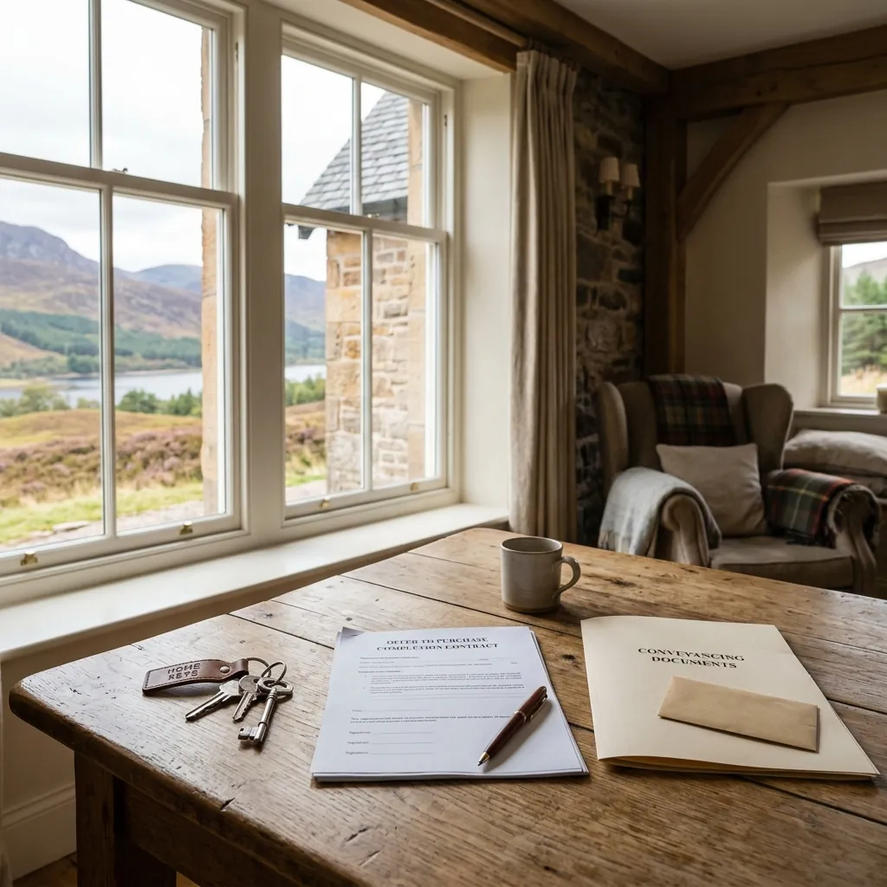
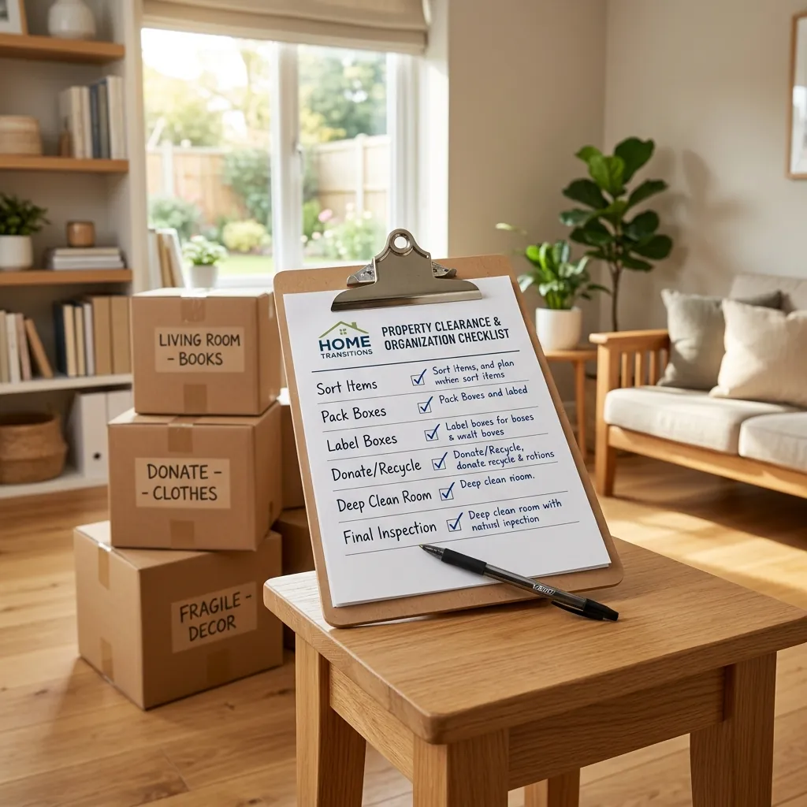

Executor’s Guide: Clearing and Selling an Inherited House in Scotland

Losing a loved one is highly challenging, and dealing with their property can feel overwhelming. Executors in Scotland face a unique legal system, requiring careful handling of Confirmation paperwork, physical belongings, property security, maintenance, and the eventual sale. When multiple heirs are involved, managing these demands can become a stressful second job.
Legal Disclaimer
This guide is for general information only and is not legal advice. Executors and beneficiaries should speak to a Scottish solicitor about their own circumstances before making decisions about an estate or inherited property.
In Scotland, the process for administering estates is different from England and Wales. This guide provides executors with a clear roadmap to manage the house clearance and property sale process safely, ensuring legal compliance and reducing unnecessary delays.
First: What Does “Confirmation” Mean in Scotland?
Confirmation is a court document giving an executor authority to collect and administer estate assets. It serves a similar purpose to probate in England and Wales, but the Scottish procedure is different. Scottish Courts and Tribunals Service guidance explains Confirmation.
Confirmation and the property sale
In Scotland, Confirmation is the legal authority that allows an executor to collect, manage, and distribute someone’s estate. If the estate includes a property, the executor will usually need Confirmation before the house sale can legally settle.
You can begin gathering records, protecting the property and discussing a possible sale while the estate is being dealt with. Your solicitor should check the title and estate circumstances and confirm the authority and documents needed for a sale. Confirmation will often be required for estate property; do not commit to a settlement date before the legal position is clear.
Dealing with Inherited Property?
If you are an executor or beneficiary dealing with an inherited property in Scotland, SB Properties UK can help you understand whether a direct cash sale may be suitable once the legal position is clear.
Discuss the propertyConfirmation gives executors legal authority to deal with the estate.
Can You Clear a House Before Confirmation in Scotland?
Before clearing a house, distinguish protecting the building from selling or distributing estate assets. Record the contents and ask the estate solicitor what can be removed and what should be valued or retained.
Executors are encouraged to secure the building, take utility meter readings, clean out food, and search for the Will and title deeds immediately. However, you must be extremely careful when dealing with valuables. Belongings like jewelry, art, and vehicles form part of the estate. Disposing of or gifting these items before a professional valuation is completed can lead to personal liability or inheritance disputes. The safest approach is to take photographs of each room, compile a thorough inventory, keep receipts for any upkeep costs, and consult beneficiaries before removing anything of value. Once Confirmation is granted, the executor has clearer authority to deal with the estate assets.
What You Can Usually Do Early
Prior to receiving Confirmation, you should focus on tasks that protect the property and locate important information:
- Secure the property: Lock all doors and windows, set alarms, and check for immediate hazards.
- Check windows and doors: Ensure all access points are sturdy, functional, and weather-tight.
- Inform the insurer: Notify the current insurer that the house is unoccupied, as standard cover may become void.
- Take meter readings: Document gas and electricity levels to prevent utility overcharging.
- Locate paperwork: Search for Wills, title deeds, insurance documents, and financial files.
- Remove perishable food: Empty the fridge and cupboards to prevent pests and unpleasant odors.
- Protect valuables: Place cash, jewelry, and specific sentimental items in a safe, secure location.
- Photograph rooms and contents: Create a visual record of the property's condition for estate records.
- Keep records: Keep receipts for any repairs, locks, or security systems you purchase for the property.
- Check for leaks, damp, heating, and urgent maintenance issues: Inspect the home regularly to prevent winter damage.
What You Should Be Careful With
Avoid taking actions that could reduce the estate value or violate legal guidelines before receiving formal authority:
- Selling valuable items: Never sell cars, antiques, or jewelry without formal valuation and solicitor approval.
- Clearing antiques, jewelry, vehicles, art, or collections: These items must be declared for inheritance tax calculations.
- Throwing away paperwork: Avoid shredding old letters or receipts until you are sure they are not needed for tax filings.
- Removing items other beneficiaries may dispute: Keep all distributions transparent to prevent family conflict.
- Canceling services too early: Ensure the heating stays on during winter months to avoid burst pipes.
- Spending estate funds without records: Document every penny spent on the property to show the beneficiaries.
- Allowing the property to sit uninsured or unsecured: Failing to maintain insurance is a breach of your executor duties.

Keep records, photograph contents, and get guidance before clearing valuable items.
Step-by-Step Checklist for Clearing an Inherited House
This checklist helps you organise the practical work. Check who has authority to instruct it, agree a budget and keep records of costs and disposal.
- Secure the property: Ensure the home is locked. Change locks if keys are missing.
- Inform the insurer: Arrange specialist empty property insurance to keep the building covered.
- Take photos and make an inventory: Catalog the rooms and items for tax reporting and family records.
- Find key documents: Search for the Will, title deeds, insurance policies, and financial accounts.
- Check for valuables and sentimental items: Check hidden places for cash or jewelry. Set aside specific bequests.
- Speak with beneficiaries: Agree on who will inherit specific physical possessions.
- Get valuations where needed: Hire professional surveyors to value the building and valuables.
- Arrange house clearance: Coordinate family help or hire a clearance team to dispose of rubbish and donate items.
- Clean and prepare the property: Perform a thorough deep clean and tidy the garden.
- Decide whether to repair, sell as-is, use an estate agent, go to auction, or contact a cash buyer: Choose the route that matches your timeline.
Should You Repair an Inherited House Before Selling?
Inherited homes in Glasgow or Paisley are often dated and need modernization. Executors must decide whether to fund renovations or sell in as-is condition. While repairs can increase the market value, they require upfront estate cash, coordinate contractors, and prolong the sale. The holding costs—including unoccupied insurance, council tax premiums, and winter heating—accumulate rapidly, eating into the estate value.
Compare the expected sale proceeds after repairs with the cost, risk and time of doing the work. Urgent safety or protection work may be necessary, but refurbishment does not always return its cost. Obtain quotes and an independent view of value before using estate funds.
| Repair Type | Example | Usually Worth Considering? | Notes |
|---|---|---|---|
| Basic cleaning | Deep cleaning carpets and kitchens | Yes | Improves property odor and presentation at a minimal cost. |
| Garden tidy | Mowing lawns and cutting hedges | Yes | Improves initial kerb appeal and keeps the home looking occupied. |
| Minor repairs | Fixing loose handrails or leaking pipes | Yes | Protects visitors' safety and prevents minor damp issues. |
| New kitchen or bathroom | Replacing dated suites and cabinets | Rarely | High upfront expense; buyers usually prefer choosing their own layout. |
| Full renovation | Rewiring, heating upgrades, plastering | No | Rarely yields a full financial return and delays estate closure by months. |
| Damp, roof, or electrical work | Damp-proofing or tiling repairs | Case-by-case | Required for traditional mortgages. If unfunded, consider cash buyers. |
Executors should weigh repair costs against the likely uplift and timescale.
Selling an Inherited House in Scotland: Your Main Routes
When the property is ready, you must choose how to sell. There are four primary routes available to Scottish executors, each offering different levels of certainty, cost, and speed.
1. Traditional Estate Agent
Listing the property publicly is best for modern homes in high-demand areas where achieving the maximum price is the goal. However, you must pay for a Home Report upfront. You also face the risk of property chain collapses, buyer mortgage rejections, and ongoing holding costs during the months it takes to complete.
2. Property Auction
Auction terms vary. Check the reserve, fees, binding point, conditions and completion date with the auctioneer and estate solicitor. Neither a sale nor a particular price is guaranteed.
3. Direct Cash Buyer
A direct buyer may consider purchasing from the executor in the property's current condition. Agree any remaining contents and costs in writing, check Home Report requirements with the solicitor, and verify funds. A proposed timetable must allow for authority, title and other legal checks.
4. Selling to a Family Member or Beneficiary
Sometimes, an heir wishes to buy out the other beneficiaries and keep the property. This keeps the asset in the family but requires professional RICS valuations to ensure fairness. Funding and mortgage approvals for the purchasing family member can take time.
Compare each offer on the same basis
- Net proceeds after costs and mortgage repayment.
- Buyer identity, evidence of funds and conditions.
- Requirements for authority, title, the Home Report and any remaining contents.
- A realistic settlement date agreed through the solicitor.
| Route | Best For | Pros | Cons | Certainty |
|---|---|---|---|---|
| Estate Agent | Good condition homes; maximizing value | Exposure to competing buyers; price depends on offers. | Slow timeline, chain collapse risk, Home Report fees | Depends on funding and contract conditions. |
| Auction | Un-mortgageable properties; run-down houses | Binding sale, fast closing | High entry fees, risk of low reserve sale | Depends on funding and contract conditions. |
| Direct Cash Buyer | Fast estate settlement; dated properties | Possible purchase in current condition; compare discount, fees, requirements and terms. | Lower purchase price than open market | Depends on funding and contract conditions. |
| Family Member | Keeping property in the family | Smooth transition, keeps asset | Financing delays, potential valuation disputes | Depends on funding and contract conditions. |
Want a Straightforward Sale?
If the property is empty, dated, difficult to manage, or costing the estate money, SB Properties UK can discuss a straightforward cash sale with no pressure to proceed.
Request a Cash OfferEstate Agent vs Cash Buyer for an Inherited Property
Choosing between an estate agent and a cash buyer requires balancing the final sale price against speed and convenience. Traditional buyers often require months to complete, and if they pull out, the estate continues to pay empty home insurance, utilities, and council tax. A cash buyer offers lower upfront stress, buying the house directly in as-is condition. For a detailed breakdown, you can read our comparison of estate agent vs cash buyer fees in Scotland.
Costs to Think About When an Inherited House Is Sitting Empty
Failing to sell quickly means managing ongoing expenses on an unoccupied property. Executors must plan for:
- Specialist insurance: Unoccupied properties require expensive void insurance.
- Council Tax: ask the council about the actual charge and any deceased-estate exemption or empty-home premium.
- Utilities: Heating must run to prevent burst pipe risks.
- Security: Upkeep of locks and security checks.
- Garden maintenance: Tidy lawns prevent signs of abandonment.
- Repairs: Sudden structural issues, roof leaks, or damp treatment.
- Mortgage: Ongoing debt repayments if applicable.
- Legal fees: Executry and property transfer fees.
- Home Report & Marketing: Upfront expenses for estate agent sales.
- House clearance costs: Disposal of unwanted furniture.
For more details on these figures, read our guide on empty property costs in Central Scotland.
Can You Sell an Inherited House Fast in Scotland?
Your solicitor should check the title and estate circumstances and confirm the authority and documents needed for a sale. Confirmation will often be required for estate property; do not commit to a settlement date before the legal position is clear. SB Properties may buy directly or discuss an introduction to suitable investors. We assess the property and explain the route before any commitment. Offers may be below open-market value, and price, costs and timing are subject to assessment and legal checks.
When a Cash Buyer May Be Useful for an Executor
A direct cash sale is highly practical in several scenarios:
- Property needs work: Bypasses the need for expensive repairs.
- Empty home: compare continuing bills with the net proceeds of each sale route.
- Family circumstances: consider preferred timing alongside the estate's legal duties and financial position.
- Disagreement: seek the estate solicitor's advice before committing to a contested sale.
- Executor lives far away: Removes the burden of managing maintenance and viewings.
- Tenants: assess a sale with the tenancy continuing and obtain advice about landlord obligations.
- Failed open-market sales: Provides a reliable back-up.
- Executor wants to avoid viewings: Bypasses public viewings during grief.
- Property is in Glasgow or Paisley: Relies on local buyers who understand Renfrewshire and Central Scotland.
How SB Properties UK Can Help With Inherited Property Sales
SB Properties may buy directly or discuss an introduction to suitable investors. We assess the property and explain the route before any commitment. Offers may be below open-market value, and price, costs and timing are subject to assessment and legal checks.
For more legal and practical guidance, see our guides on selling inherited property in Scotland and how to sell a probate house in Scotland.
Inherited House Sale FAQs for Scotland
What is Confirmation in Scotland?
Confirmation is the court document authorising an executor to collect and administer estate assets. Ask the estate solicitor what is required for the particular property and its title.
Can you sell a house before Confirmation is granted?
You can discuss a potential sale while the estate is being dealt with. Your solicitor should confirm authority, marketing requirements and the documents needed before you accept binding terms or agree settlement.
Can you clear a house before Confirmation?
Protect the home, take photographs and preserve records. Get the estate solicitor's advice before selling, distributing or disposing of contents, especially valuable items or specific bequests.
Who is responsible for clearing an inherited house?
The executor is responsible for clearing the property. They can clear it themselves or hire a professional company, paying the costs from the estate funds before distribution.
Do I need a Home Report to sell an inherited property?
A Home Report is normally required when a Scottish home is marketed. Cash payment alone is not an exemption. A genuinely private transaction without marketing may be treated differently; ask your solicitor to confirm the requirements, including any EPC, before advertising or agreeing terms.
Should I renovate an inherited house before selling?
Not necessarily. Compare the present-condition sale options with repair estimates, likely value after work and the costs of delay. Record the reasons for the executor's decision.
Can a cash buyer buy an inherited house?
Yes. Cash buyers purchase properties directly from executors, buying them as-is and completing the sale once Confirmation is issued.
Can beneficiaries stop an executor selling a house?
A dispute can affect what the executor should do next. Ask the estate solicitor about the will, estate debts, beneficiary interests and any challenge before proceeding with a contested sale.
How long does it take to sell an inherited house in Scotland?
There is no fixed timetable. The estate administration, title, buyer funding, property condition and agreed contract determine how soon a sale can settle.
What happens if the inherited property has a mortgage?
The executor must notify the mortgage lender. Outstanding loans must be paid off from the estate funds or the proceeds of the house sale upon completion.
Can I sell an inherited house in Paisley or Glasgow quickly?
SB Properties may buy directly or discuss an introduction to suitable investors. We assess the property and explain the route before any commitment. Offers may be below open-market value, and price, costs and timing are subject to assessment and legal checks.
Is this article legal advice?
No. This guide is for general information only. Executors and beneficiaries should consult a qualified Scottish solicitor about their specific estate circumstances.
Final Thoughts: Make the Process Clear, Calm, and Manageable
Secure the property, check insurance and keep a clear record of its contents and costs. Work with the estate solicitor on authority and timing, then compare selling as it stands with any proposed repairs. A direct sale is one option, with a price tradeoff to assess against broader marketing.
Talk to Our Team Today
To discuss selling an inherited house in Scotland, contact SB Properties UK for a calm, no-obligation conversation about your options.
Get in TouchFor more legal and practical guidance, we recommend consulting these trusted resources:
- Scottish Courts and Tribunals Service guidance on Confirmation
- GOV.UK or HMRC inheritance tax guidance
- Citizens Advice Scotland
- Law Society of Scotland
- Registers of Scotland
Sources and your next step
General information for property owners; ask a Scottish solicitor or appropriate adviser about your circumstances. The source links were checked for this content update on 11 October 2026.
Related seller guidance
Explore our property sale service or discuss your property. We may buy directly or discuss an investor introduction; offers may be below open-market value.